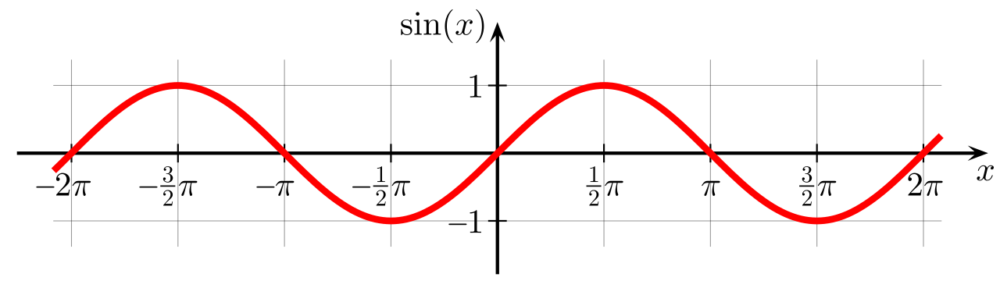
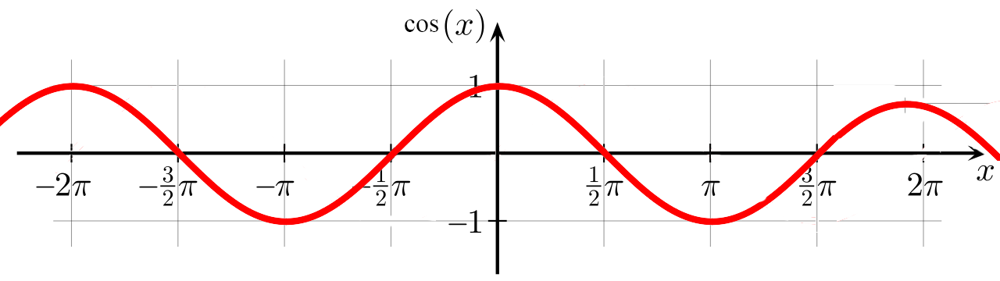
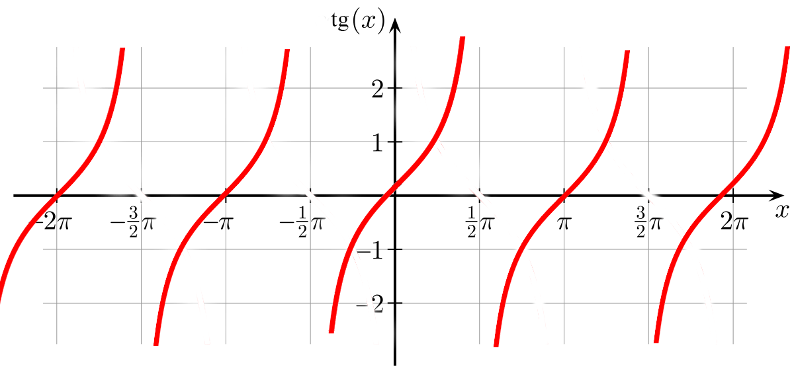
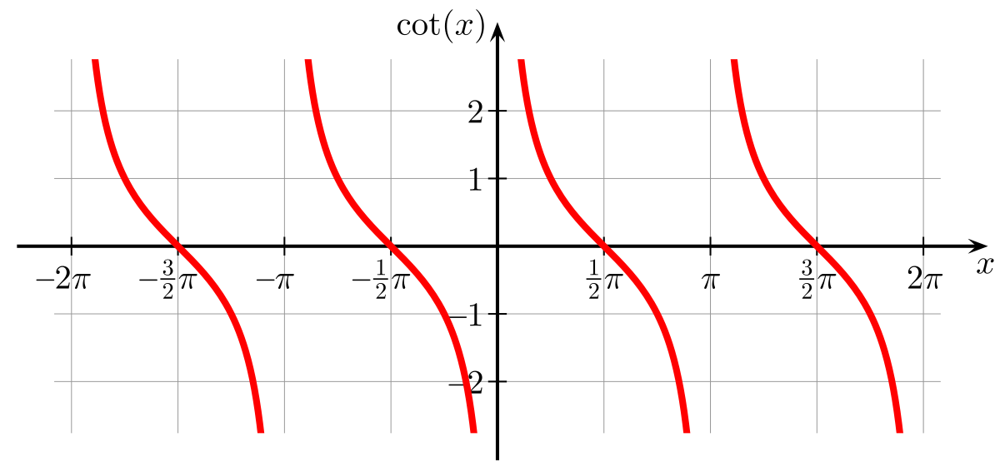

Periodik funksiýalar.
Kesgitleme. Eger f funksiýanyň kesgitleniş ýaýlasyndan alnan islendik x üçin T ≠ 0 san
tapylyp,
f(x – T) = f(x) = f(x + T)
deňlik ýerine ýetse, onda f funksiýa T periodly periodik funksiýa diýilýär.
Sinus we kosinus san göni çyzygynyň ähli ýerinde kesgitli we sin(x + 2π) = sinx, cos (x + 2π) = cosx. Şoňa görä-de, sinus we
kosinus 2π periodly periodik funksiýalardyr.Tangens bilen kotangensiň kesgitleniş ýaýlasyna x degişli bolsa x + π we x – π hem degişlidir we tg(x + π) = tgx, ctg(x + π) = ctg x.
Şoňa görä-de, tangens we kotangens π periodly periodik funksiýalardyr. Adatça, funksiýanyň periody diýlende, iň kiçi položitel period göz öňünde tutulýar.
Trigonometrik funksiýalar:
y = sin(x)

Derňewi:
1). Kesgitleniş ýaýlasy: R hakyky sanlar köplügi.
2). Bahalar ýaýlasy: [ -1; 1 ]
3). Täk.
4). sin(x + T) = sin(x) bu ýerde T = 2π . Periodik funksiýa.
5). Nollary: sin(x) = 0 x = πn, n∊ Z
6). Alamatyny hemişelik saklaýan aralyklary:
sin(x) > 0 x∊( 2πn, π + 2πn) , n∊ Z
sin(x) < 0 x∊( -π + 2πn ; 2πn)
7). (-π/2 ± 2πn; π/2 ± 2πn ) aralykda artýar.
8). ( π/2 ± 2πn; 3π/2 ±2πn ) aralykda kemelýär.
9). ymax = { π/2 ± 2πn ; 1 }
ymin = { -π/2 ± 2πn; -1 }
10). sin'( x ) = cos( x );
y = cos(x)

Derňewi:
1). Kesgitleniş ýaýlasy: R hakyky sanlar köplügi.
2). Bahalar ýaýlasy: [ -1; 1 ]
3). Jübüt.
4). cos(x + T) = cos(x) bu ýerde T = 2π . Periodik funksiýa.
5). Nollary: cos(x) = 0 = > x = π/2, n∊ Z
cos(0) = y = > y = 1, n∊ Z
6). Alamatyny hemişelik saklaýan aralyklary:
cos(x) > 0 x∊( -π/2 - 2πn , π/2 + 2πn) , n∊ Z
7). (-π + 2πn; 2πn ) aralykda artýar.
8). ( 2πn; π + 2πn ) aralykda kemelýär.
9). ymax = { 0 ± 2πn ; 1 }
ymin = { π ± 2πn; -1 }
10). cos'( x ) = - sin( x );
y = tg(x)

Derňewi:
1). Kesgitleniş ýaýlasy:
( -π/2 ± πn ; π/2 ± πn ).
2). Bahalar ýaýlasy: R hakyky sanlar köplügi.
3). Täk.
4). tg(x + T) = tg(x) bu ýerde T = π . Periodik funksiýa.
5). Nollary:
tg(x) = 0 = > x = ( ± πn ) n∊ Z
tg(0) = y = > y = 0;
6). Alamatyny hemişelik saklaýan aralyklary:
tg(x) > 0 x∊( 0 ± πn , π/2 ± πn ) , n∊ Z
7). Tutush san okunda artýar.
8). Kemelýän aralyk ýok.
9). ymax = ýok.
ymin = ýok.
10). tg'( x ) = 1 / cos2( x );
y =ctg(x)

Derňewi:
1). Kesgitleniş ýaýlasy:
( 0 ± πn ; π ± πn ).
2). Bahalar ýaýlasy: R hakyky sanlar köplügi.
3). Täk.
4). ctg(x + T) = ctg(x) bu ýerde T = π . Periodik funksiýa.
5). Nollary:
y oky bilen kesişme nokady ýok.
ctg(0) = y = > y = 0;
6). Alamatyny hemişelik saklaýan aralyklary:
ctg(x) > 0 x∊( 0 ± πn , π/2 ± πn ) , n∊ Z
7). Artýan aralyk ýok.
8). Tutuş san okunda kemelýär.
9). ymax = ýok.
ymin = ýok.
10). ctg'( x ) = - 1 / sin2( x );